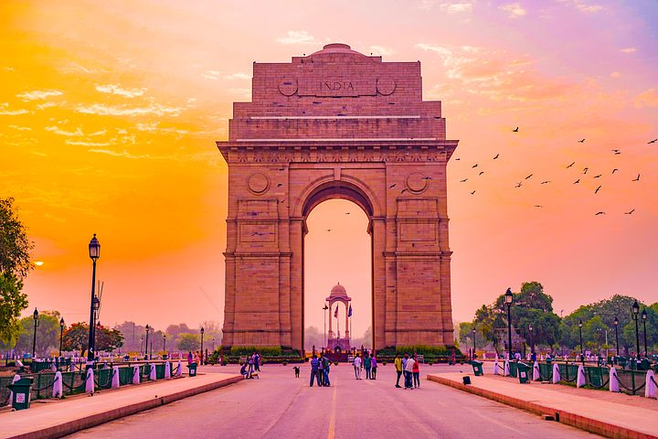

Delhi
About the city Places to visit Best time to visit About food Places to stay Transportation facility Map
About the city
The capital city. A symbol of the country’s rich past and thriving present, Delhi is a city where ancient and modern blend seamlessly together. It is a place that not only touches your pulse but even fastens it to a frenetic speed. Home to millions of dreams, the city takes on unprecedented responsibilities of realizing dreams bringing people closer and inspiring their thoughts.
Places to visit
India Gate

The All India War Memorial, popularly known as the India Gate, is located along the Rajpath in New Delhi.
The imposing structure of India Gate is an awe-inspiring sight and is often compared to the Arch de Triomphe in France, the Gateway of India in Mumbai and the Arch of Constantine in Rome.
This 42-meter tall historical structure was designed by Sir Edwin Lutyens and is one of the largest war memorials in the country.
India Gate is also famous for hosting the Republic Day Parade every year.
Humayun's Tomb

Humayun’s Tomb, Delhi is the first of the grand dynastic mausoleums that were to become synonyms of Mughal
architecture with the
architectural style reaching its zenith 80 years later at the later Taj Mahal.
Humayun’s Tomb stands within a complex of 27.04 ha.
that includes other contemporary, 16th century Mughal garden-tombs such as Nila Gumbad, Isa Khan, Bu Halima, Afsarwala, Barber’s Tomb and the complex where
the craftsmen employed for the Building of Humayun’s Tomb stayed, the Arab Serai.
Qutub Minar
Qutab Minar is a soaring, 73 m-high tower of victory, built in 1193 by Qutab-ud-din Aibak immediately after the defeat of Delhi's last Hindu kingdom.
The tower has five distinct storeys, each marked by a projecting balcony and tapers from a 15 m diameter at the base to just 2.5 m at the top.
The first three storeys are made of red sandstone; the fourth and fifth storeys are of marble and sandstone. At the foot of the tower is the Quwwat-ul-Islam Mosque, the first mosque to be built in India.
An inscription over its eastern gate provocatively informs that it was built with material obtained from demolishing '27 Hindu temples'.
A 7 m-high iron pillar stands in the courtyard of the mosque. It is said that if you can encircle it with your hands while standing with your back to it your wish will be fulfilled.
Red Fort

Red Fort, also called Lal Qalʿah, also spelled Lal Kila or Lal Qila, Mughal fort in Old Delhi, India. It was built by Shah Jahān in the mid-17th century and
remains a major tourist attraction. The fort was designated a UNESCO World Heritage site in 2007.The fort’s massive red sandstone walls,
which stand 75 feet (23 metres) high, enclose a complex of palaces and entertainment halls, projecting balconies, baths and indoor canals, and geometrical gardens,
as well as an ornate mosque. Among the most famous structures of the complex are the Hall of Public Audience (Diwan-i-ʿAm), which has 60 red sandstone pillars supporting a flat roof,
and the Hall of Private Audience (Diwan-i-Khas), which is smaller and has a pavilion of white marble.
Lotus temple
Located in the national capital of New Delhi, the Lotus Temple is an edifice dedicated to the Baha'i faith.
The magnificent structure of this building unfolds in the form of a stupendous white petal lotus and is one of the most visited establishments in the world.
The design of this shrine was conceptualized by Canadian architect Fariborz Sahba and was completed in the year 1986. This temple seeks to propagate the oneness of the Almighty
and is open to all regardless of their nationality, religion, race or gender. The Lotus temple is one of the seven Baha'i House of Worship present around the world.
Best time to Visit
The best time to visit Delhi is from October to March when the weather is at its best. During this period flowers are at their blooming best, the weather is pleasent and enjoyable to experience Incredible Delhi.
About Food
1.Paranthas
2.Chaat
3.Butter Chicken
4.Kebabs
5.Chole Bhature
6.Biryani
7.Rolls
7.Momos
8.Desserts
Places to stay
Accommodation facilities are rich in the Capital. It includes the following places:
1. Hyatt Delhi Residences
2.The Oberoi New Delhi
3.The Leela Palace New Delhi
4.The Imperial New Delhi
5.JW Marriot Hotel Delhi Aerocity
6.Taj Palace New Delhi
Transportation Facility

By Air
Indira Gandhi International Airport (IATA: DEL, ICAO: VIDP) is the primary international airport serving Delhi, India. The airport, spread over an area of 5,106 acres (2,066 ha), is situated in Palam, Delhi, 15 km (9.3 mi) south-west of the New Delhi Railway Station and 16 km (9.9 mi) from New Delhi city centre.

By Rail
New Delhi railway station (station code: NDLS) is the main railway station in Delhi, situated between Ajmeri Gate and Paharganj. It is one of the busiest railway station in the country in terms of train frequency and passenger movement. Around 480 trains start, end, or pass through the station daily, which handled 500,000 passengers daily in 2013 with 16 platforms.

By Road
Delhi is well connected, by a network of roads and national highways, with all the major cities in India. The three major bus stands in Delhi are Inter State Bus Terminus (ISBT) at Kashmiri Gate, Sarai Kale-Khan Bus Terminus and Anand Vihar Bus Terminus.